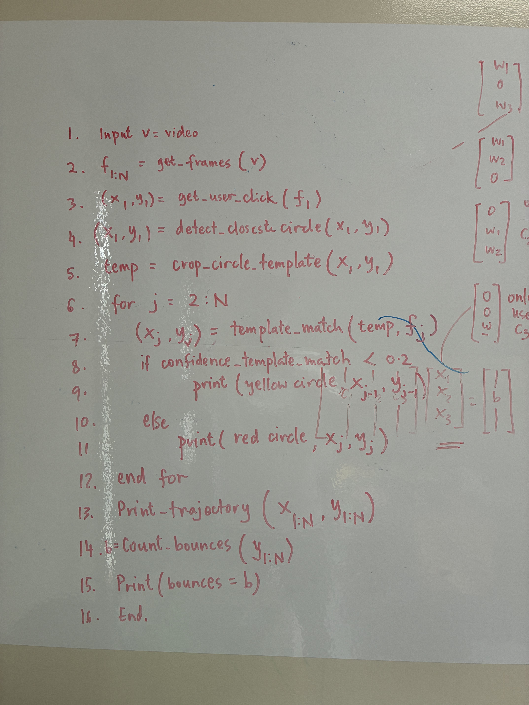
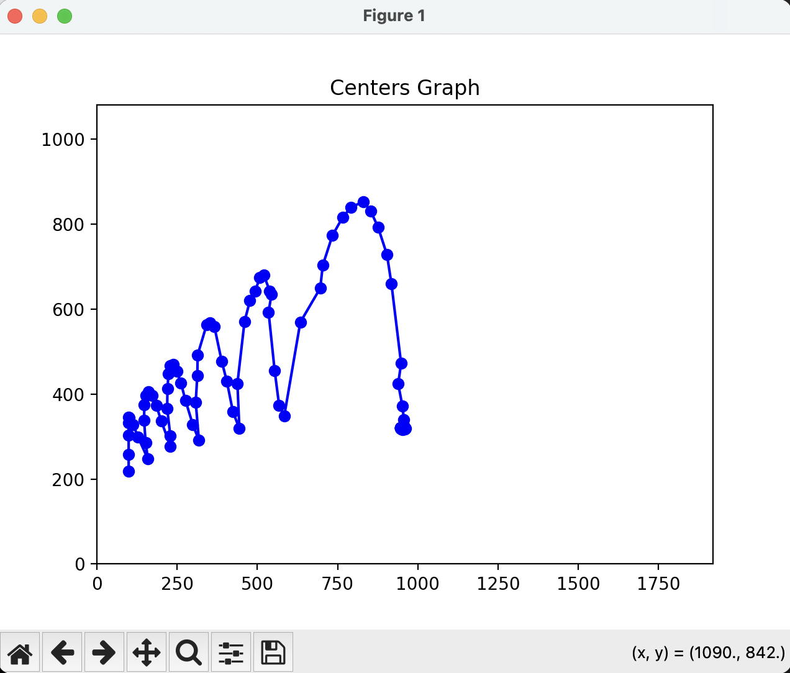

Load the video
Read the recording one frame at a time for consistent analysis.
Computer Vision Project
A video-based ball tracker that follows a juggling ball frame by frame and turns motion into useful data.
Explore the projectCounting juggling throws by hand is distracting, inconsistent, and difficult to repeat when reviewing a video.
This project explores whether computer vision can reliably locate a ball in recorded footage and follow it throughout a juggling sequence. The goal is to create a foundation for automatically measuring throws, catches, and patterns without interrupting the juggler.
ClickVideo.py processes the video as a sequence of images,
using an initial ball selection to establish what should be tracked.
Read the recording one frame at a time for consistent analysis.
Use a click to identify the target and initialize its position.
Update the ball's location as it moves through each new frame.
Store the tracked coordinates so the motion can be reviewed and measured.

The project demonstrates a complete workflow from selecting a ball to visualizing its movement across a juggling video.
Tracking is clearest when the ball stands out from the background and the scene is well lit. Fast movement, blur, and temporary overlap with the juggler remain useful challenges for future improvements.
Key result: video frames can be converted into a continuous motion path, creating the data needed for an automatic juggle counter.
